I am a
final-year Ph.D. student (graduating 2027) and am
actively seeking full-time
Research Scientist / Research Engineer / MTS positions in
Generative AI ,
Physical AI , and
Robotics . Please feel free to reach out at
htxue.ai@gatech.edu .
About
I work on generative AI and Physical AI. My research spans video diffusion models and their post-training,
world models and world action models for robotics, multimodal large language models, and the safety of
generative models. I received my B.E. in Computer Science (Zhiyuan Honors Program) from Shanghai Jiao Tong
University in 2022.
Skills: diffusion models; post-training of diffusion models; world models; world action models; multimodal LLMs.
Research interests
Experience
2026.5 – present Research Intern , Meta Superintelligence Labs / Reality LabsWorld models and VLM data pipelines
2025.5 – 2025.11 Machine Learning Researcher , Adobe FireflyDistillation and motion post-training for video diffusion models (MoGAN)
2024.5 – 2024.8 Research Intern , NVIDIA Research (Deep Imagination Research) Visual grounding and embodied reasoning for vision-language models (Point-It-Out)
2021.9 – 2022.12 Visiting Research Intern , MIT CSAILLearning 3D intuitive physics from video (3D-IntPhys)
2021.9 – 2021.12 Research Intern , Microsoft Research AsiaLarge-scale pre-training for document AI
News
2026-10 Final-year Ph.D. now and on the job market for GenAI / Physical AI / Robotics roles. New preprint How Long, Not How Close : a learned temporal metric for planning in latent world models. 2026-09 Our survey on adversarial attacks and defenses for diffusion models was accepted to an ECCV 2026 workshop. 2026-07 We propose WorldBagel , unified multimodal models for vision-language-action-world modeling. 2026-06 MoGAN accepted to ECCV 2026.2026-05 We propose ACWM-Phys , a physics-rich benchmark for action-conditioned video world models. 2026-04 PIO-Bench accepted to TMLR 2026.2026-04 We propose Immune2V , a protective watermark for image-to-video generation. 2026-04 Joining Meta Superintelligence Labs to work on world models. 2026-01 LapFlow accepted to ICLR 2026. 2025-10 We propose MoGAN , post-training for motion quality in few-step video diffusion. 2025-09 We propose PIO-Bench , a visual-grounding-centric benchmark for embodied VLM reasoning. 2025-04 Joining Adobe Firefly (summer and fall) for post-training of video diffusion models. 2024-10 NeurIPS 2024 Scholar Award. 2024-09 Three papers accepted to NeurIPS 2024: DP-Attacker , RefDrop , QueST . 2024-05 Summer intern at NVIDIA Deep Imagination Research . 2024-03 ICLR 2024 Travel Award. 2024-01 SDS-Attack accepted to ICLR 2024.2023-10 NeurIPS 2023 Scholar Award; invited reviewer for TPAMI. 2023-09 Diff-PGD and 3D-IntPhys accepted to NeurIPS 2023.2022-12 Top Reviewer, NeurIPS 2022. 2022-10 Distance-Transformer accepted to EMNLP 2022 Findings.2022-08 Started Ph.D. at Georgia Tech (Machine Learning).
Show older news
Preprints
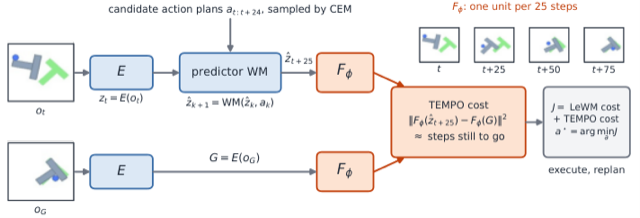
Lama Moukheiber, Haotian Xue , Yongxin Chen
arXiv 2026
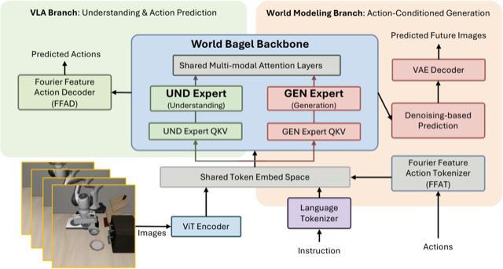
Zelin Zhao, Min Shi, Bo Yuan, Haotian Xue , Jialuo Li, Lama Moukheiber, Humphrey Shi, Yongxin Chen
arXiv 2026
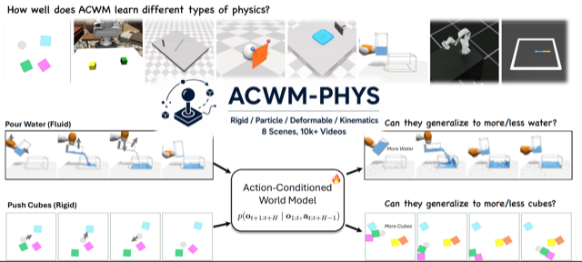
Haotian Xue , Yipu Chen*, Liqian Ma*, Zelin Zhao, Lama Moukheiber, Yuchen Zhu, Yongxin Chen
arXiv 2026
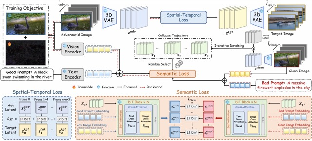
Zeqian Long*, Ozgur Kara*, Haotian Xue* , Yongxin Chen, James M. Rehg
arXiv 2026
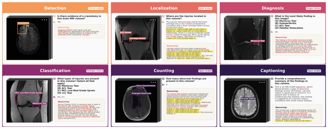
Lama Moukheiber, Caleb M. Yeung, Haotian Xue , Alec Helbling, Zelin Zhao, Yongxin Chen
arXiv 2026
Publications
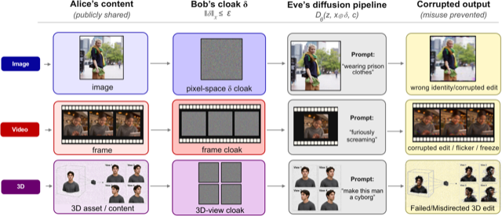
Ozgur Kara, Tunahan C. Ozden, Fatih Horoz, Zeqian Long, Haotian Xue , Yongxin Chen, Oguzhan Akcin, Yiting Chen, et al.
ECCV 2026 Workshop
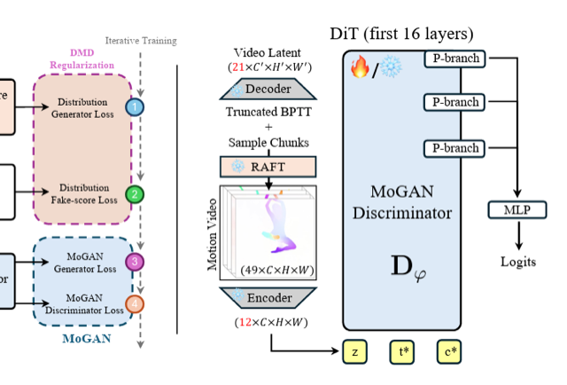
Haotian Xue , Qi Chen, Zhonghao Wang, Xun Huang, Eli Shechtman, Jinrong Xie, Yongxin Chen
ECCV 2026
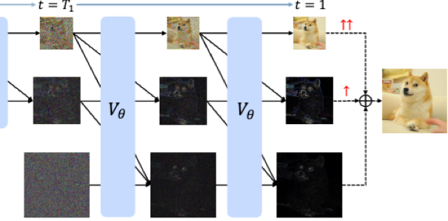
Zelin Zhao, Petr Molodyk, Haotian Xue , Yongxin Chen
ICLR 2026
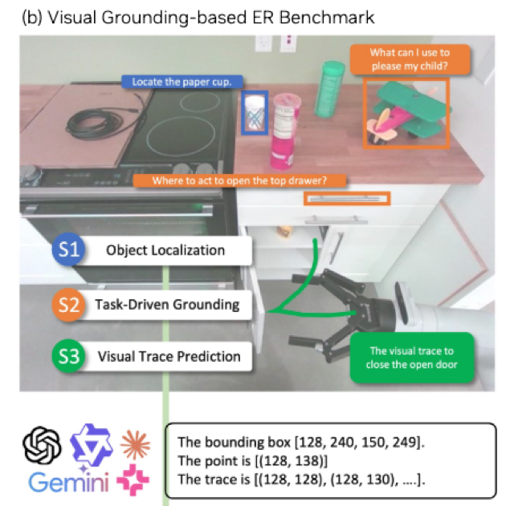
Haotian Xue , Yunhao Ge, Yu Zeng, Zhaoshuo Li, Ming-Yu Liu, Yongxin Chen, Jiaojiao Fan
TMLR 2026
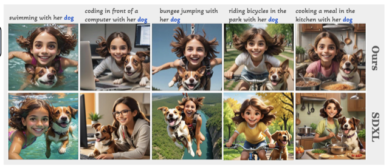
Jiaojiao Fan, Haotian Xue , Qinsheng Zhang, Yongxin Chen
NeurIPS 2024
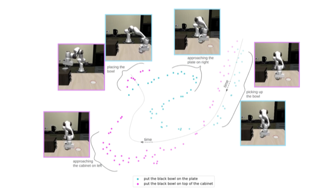
Atharva Mete, Haotian Xue , Albert Wilcox, Yongxin Chen, Animesh Garg
NeurIPS 2024
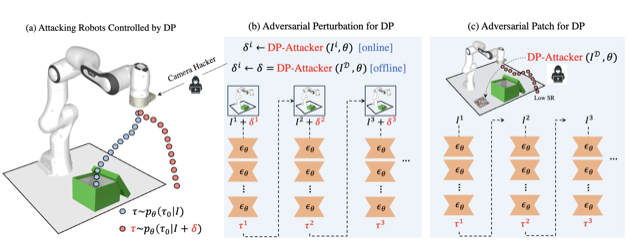
Yipu Chen*, Haotian Xue* , Yongxin Chen
NeurIPS 2024
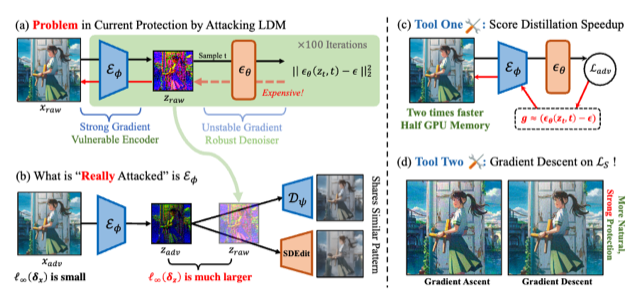
Haotian Xue , Chumeng Liang*, Xiaoyu Wu*, Yongxin Chen
ICLR 2024
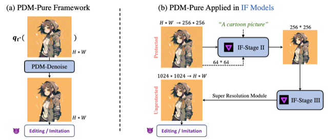
Haotian Xue , Yongxin Chen
NeurIPS 2024 Workshop on Safe Generative AI
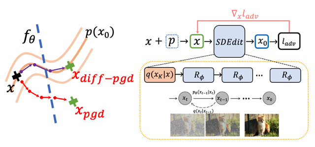
Haotian Xue , Alexandre Araujo, Bin Hu, Yongxin Chen
NeurIPS 2023
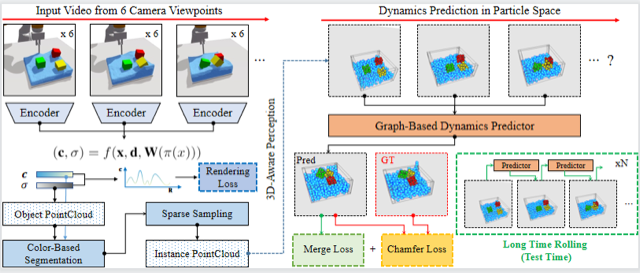
Haotian Xue , Antonio Torralba, Joshua B. Tenenbaum, Daniel L. K. Yamins, Yunzhu Li, Hsiao-Yu Tung
NeurIPS 2023
* equal contribution. Full list on Google Scholar .
Academic Service
Reviewer for NeurIPS, ICLR, ICML, CVPR, AISTATS, AAAI, TPAMI, and TCSVT. NeurIPS Outstanding Reviewer (2023, 2024); NeurIPS Top Reviewer (2022).
Miscellaneous
Piano and music.
Football (soccer); recently also basketball and tennis.
I live with a cat named Pudding. Meet him .